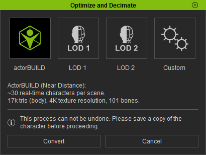
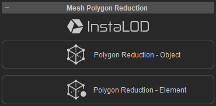
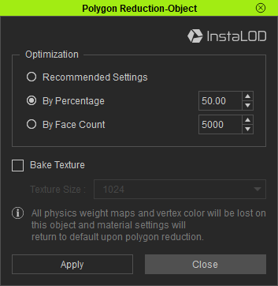
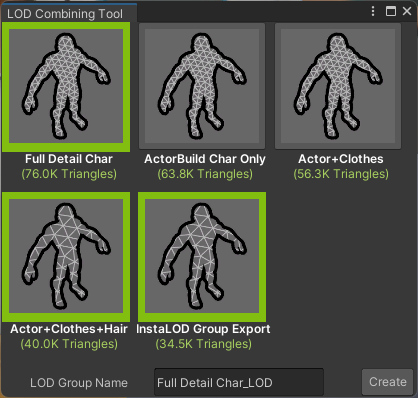

LOD or Level of detail is a means of reducing GPU overhead for rendering meshes which are distant from the camera. In short, this is achieved by rendering meshes with progressively lower triangle counts as distance from the camera increases.
In Unity, the relationship between camera distance and which mesh to render is controlled by a GameObject component called a LOD group. This contains distance information for each LOD and the relevant meshes to display are stored as <MeshRenderer> objects.
This tool takes output from Character Creator and easily converts this to a Unity LOD group. The character creator output can be from the ‘Remesher’ i.e. InstaLOD or from using the ‘Optimize and Decimate’ function.
The provided tool to construct a LOD Group only uses the prefabs generated by the CC/iC import tool - the key considerations are as follows.
The basic requirement for the tool is that all of the relevant Character Creator output has been processed (had its materials built and a prefab generated)
The prefab outputs are all in the same directory (prefab models outside of the character’s /Prefabs/ directory will not be considered for LOD group construction).
Using InstaLOD as part of the character export allows simple and rapid creation of a LOD group in Unity.
Prepare your character however you see fit.
Export clothed character with normal settings for Unity 3D (use the Mesh Only setting). This is needed to build the highest detail level of the LOD group. (See the Export From Character Creator section of the documentation for details.)
When exporting it may help to identify the highest detail model by name e.g <Model Name>_FULL
Now re-export the character this time with ‘InstaLOD’ selected in the ‘Export FBX’ dialog (again use the Mesh Only setting).
Ensure that the export directory is the same as for the ‘<Model Name>_FULL’ highest detail model.
Name the export accordingly e.g. <Model Name>_INSTALOD
Leave ‘Keep Original Avatar’ unchecked since we have a clean full detail export already (this full detail export will be processed separately - before being included in a lod group in a later step).
For a detailed discussion of the ‘Remesher’ options for this export step please refer to the official CC4 Creating LOD with Remesher documentation.
Import all the above output into Unity (See the Importing into Unity section of the documentation for details.)
The Importer window (with file selection enlarged) should appear similarly to the figure below.
Imported and unprocessed full detail + instaLOD models
Build the materials for both the FULL and INSTALOD models (See the Initial Processing section of the documentation for details). The figure below shows that the full detail model has also been baked (see the section on Texture Baking for more details).
The ‘LOD Combining Tool’ creates a Unity LOD Group from the selected prefab models found in the same directory (more properly, the selection can only be made from processed prefab assets in the prefabs directory of the selected character when the LOD combining tool is launched).
Where there is a ‘Baked’ prefab, then the tool allows EITHER the original default prefab OR the the baked prefab to be included in the LOD group (the orange selection box shown above signifies that a baked prefab has been selected).
A name can be entered (a default is suggested). Pressing create will build and save the Unity LOD Group as a new prefab in the current character’s prefab directory with the suggested/entered name.
Playing an animation on the new LOD prefab (video below) shows the LOD levels being transitioned through as the character approaches and moves away from the camera.
The ‘Play mode’ statistics display of the same animation shows the dramatic effect of the LOD level on the number of tris being rendered (see video below).
The meshes and the associated LOD levels obtained by this method are tabulated below:
Should this progression of detail prove unsatisfactory, then it can be easily adjusted (as described in the following sections).
Optimize and Decimate Tools [Character Creator 4]
Sometimes the transition from the full detail model to the first level of InstaLOD generated models can be somewhat jarring and obvious, principally due to the change in appearance of the character’s hair.
In the event of a jarring transition, a higher quality intermediate can be used in between full detail and the InstaLOD model to give a smoother near distance transition. This intermediate takes the form of an ‘actorBUILD’ version of the character which can be automatically generated from your character within Character Creator.
Please Note:This process is destructive and cannot be reversed, so please keep a save of your Character Creator Project somewhere safe before beginning.
In CC4 with the character selected, either press the ‘Optimize and Decimate’ button in the ‘Character’ section of ‘Attribute’ tab of the ‘Modify’ window, or use the menu option ‘Character -> Optimize and Decimate’
This will bring up the Optimize and Decimate window (below).

Select ‘actorBUILD’ and click ‘Convert’ (a dialog box will appear warning about mesh penetration and what to do about it - dismiss that to continue).
Once complete the character head & body will now have a lower polygon count mesh but a high quality appearance.
Note: Hair and Clothing will still have the original polygon count and must be processed separately (discussed in the Object Polygon Reduction section).
This character can be exported normally to the same directory as your other LOD eligible exports, if no further polygon reduction is required (see the Export and Inclusion into a Unity LOD Group section for details). Further polygon reducing steps are detailed in the following section.
Should you require either of the other LOD levels eg LOD1 or LOD2 (in the Optimize and Decimate tool) then reload your saved project and re-run the optimize and decimate tool to produce a LOD1 or LOD2 model.
Objects attached to the character can also have their polygon count significantly reduced whilst maintaining good visual quality (Note:this process is also destructive so a prior save of the project is needed).
With the desired object selected in the ‘Scene’ window (the object can be Hair, Clothes, Shoes etc.) click on the ‘Polygon Reduction - Object’ button in the ‘Mesh Polygon Reduction’ section of ‘Attribute’ tab of the ‘Modify’ window.

This will open the ‘Polygon Reduction - Object’ Window. The detailed use of this window is described in the official Polygon Reduction Documentation.

This allows polygon reduction according to your preferences (in this example, a 50% reduction is selected). Process each object individually.
After polygon reduction or conversion of the character to ActorBUILD, LOD1 or LOD2 then these changes cannot be undone. You must reload your original save of the project in order to return to the original full detail version of the character.
Exports of individually generated actorBUILD, LOD1 or LOD2 models should be made using the Mesh Only setting of the normal clothed fbx exporter (all exports for LOD Group construction should be made with this setting).
If LOD relevant models (for the same character) are already in the Unity project (e.g. the output of the Basic workflow for InstaLOD) then attempt to import the newly exported actorBUILD/LOD1/LOD2 into the same directory as the existing output.
Try to ensure that the .fbx files are all in the same directory, so that after processing of the new import, all of the LOD relevant prefabs are in the same /Prefabs/ directory.
Tip
If the models you wish to include in a LOD Group are in different directories, then in order for them to be considered for LOD Group creation follow these steps:
Build the materials for each model
Move all of the generated prefabs to the /Prefabs/ directory of one of the models.
Select that model in the CC/iC Importer tool window and start the ‘LOD Combining Tool’
All of the prefabs in that model’s /Prefabs/ directory should then be eligible for inclusion in the LOD Group.
Basic Workflow to Include a New Export in a LOD Group
Ensure that you have a save of your full detail project.
Perform whichever polygon reductions / character optimization suits your needs.
Export from Character Creator (-> FBX -> Clothed Character) in in the normal way (set to Unity 3D and Mesh Only).
Export to the same directory as your full detail and any instaLOD exports (if preparing a fresh import)
Or Export to its own directory for import into an existing LOD Group.
Import into Unity
For a fresh import, drag the files into the Unity project as normal.
For an existing LOD Group, drag the contents of the export directory into the same directory as the other LOD Group member models (all the model .fbx files should end up in the same directory).
OR
Import the new model to its own location and move the prefab after material processing.
Build the Materials of the new model. (if you are going to be moving the prefab then this step generates that prefab).
Select the full detail model in the import tool and Launch the LOD Combining Tool This will show all of the eligible prefabs contained in the /Prefabs/ directory of the selected model.

The example show here contains several exports with varying amounts of polygon reduction performed. The triangle count for each eligible prefab is shown and the LOD Group will be constructed in reverse order of triangle count.
Any unwanted prefabs can be deselected (click on them so the green outline is removed) prior to LOD Group creation.
Ensure that the desired prefabs are selected and that the LOD Group is named correctly, then press Create.
The new LOD Group will be created and placed in the /Prefabs/ directory.
{kind=link}
{kind=link}
{kind=link}
{kind=link}
{kind=link}
{kind=link}
{kind=link}
{kind=link}
{kind=link}
{kind=link}
{kind=link}
{kind=link}